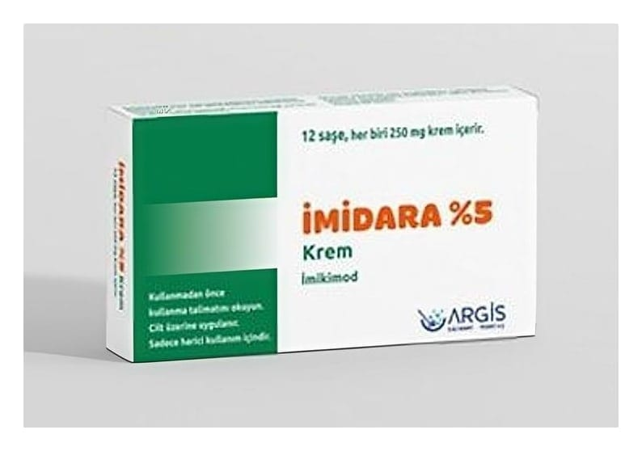

İmidara %5 Krem, 12 Saşe

Ne için kullanılır
KT · Bölüm 1İMİDARA, beyazdan hafif sarıya kadar renkte bir kremdir. Saşe adı verilen küçük tek kullanımlık ambalajlar içinde paketlenmiştir. İMİDARA, her birinde 250 mg krem bulunan 12 saşe içeren bir üründür. İMİDARA, etkin madde olarak imikimod içerir. İmikimod bağışıklık yanıt düzenleyicisidir. Siğil oluşturan virüslere ve tümöre karşı (antitümör) etkili bir ajandır. İMİDARA, üç farklı durumda kullanılabilir. Doktorunuz aşağıdaki durumların tedavisi için size İMİDARA reçeteleyebilir: • Genital bölgenin (cinsel organlar) ve anüs çevresindeki deri yüzeyindeki siğiller (kondilomata akuminata) • Yüzeyel bazal hücreli karsinom Bu, yaygın görülen, vücudun diğer bölümlerine yayılma olasılığı çok düşük olan yavaş gelişen bir deri kanseridir. Genellikle orta yaş ve yaşlı kişilerde, özellikle açık tenlilerde ortaya çıkmaktadır ve çok fazla güneş ışığına maruziyet nedeniyle oluşmaktadır. Eğer tedavi edilmezse bazal hücreli karsinom özellikle yüzde şekil bozukluğuna neden olabilir. Bu nedenle erken tanı ve tedavisi önemlidir. • Aktinik keratoz Aktinik keratoz, yaşamları boyunca çok fazla güneş ışınlarına maruz kalmış kişilerde bulunan kaba deri alanlarıdır. Bazıları renkli deridir, grimsi, pembe kırmızı veya kahverengi olabilir. Lezyonlar düz ve pullu ya da yüzeyden kabarık, kaba, sert ve siğil gibi olabilir. İMİDARA sadece sağlıklı bir bağışıklık sistemine sahip olan hastalardaki yüz ve saçlı deri üzerindeki düz aktinik keratozda kullanılır. İMİDARA, bazal hücreli karsinom, aktinik keratoz veya siğile neden olan virüsle savaşta rol oynayan doğal maddelerin, vücudunuzun kendi bağışıklık sistemi tarafından üretimine yardım eder.